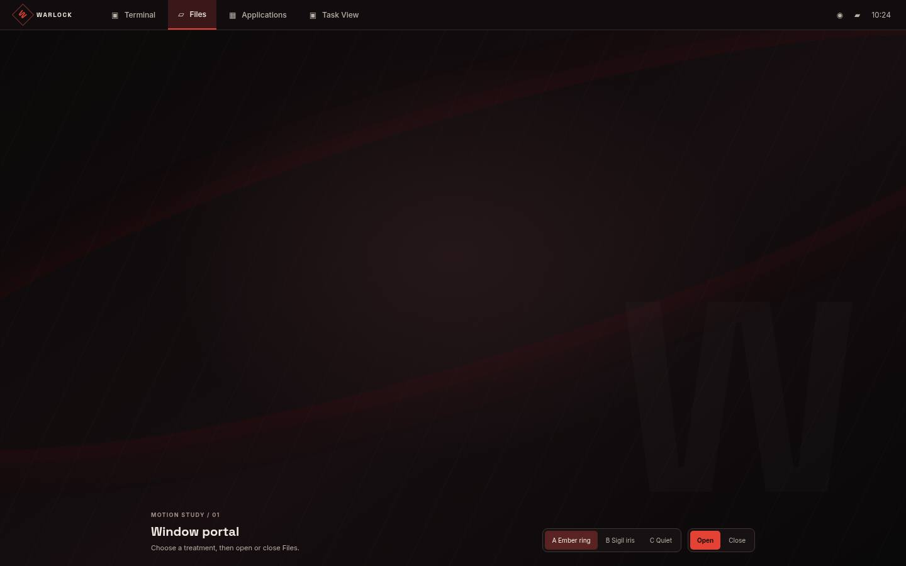
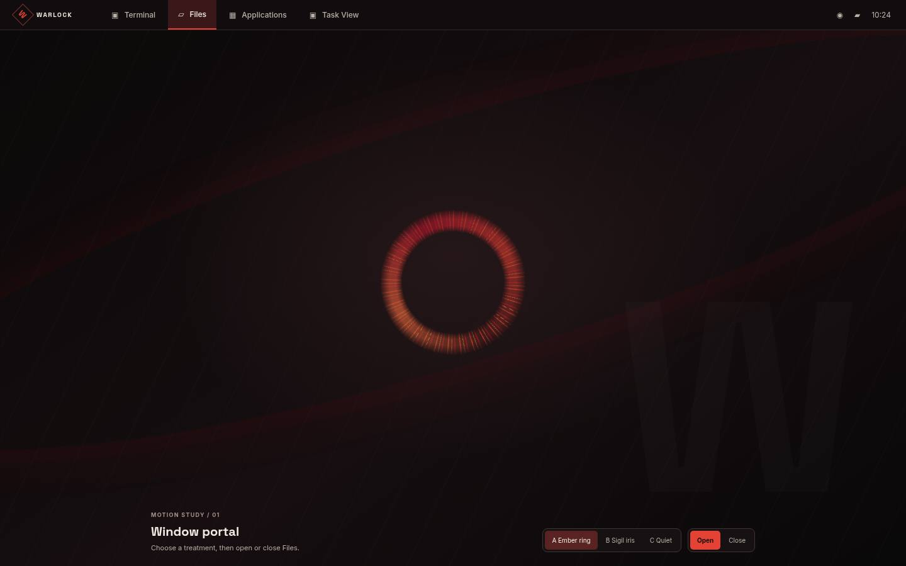
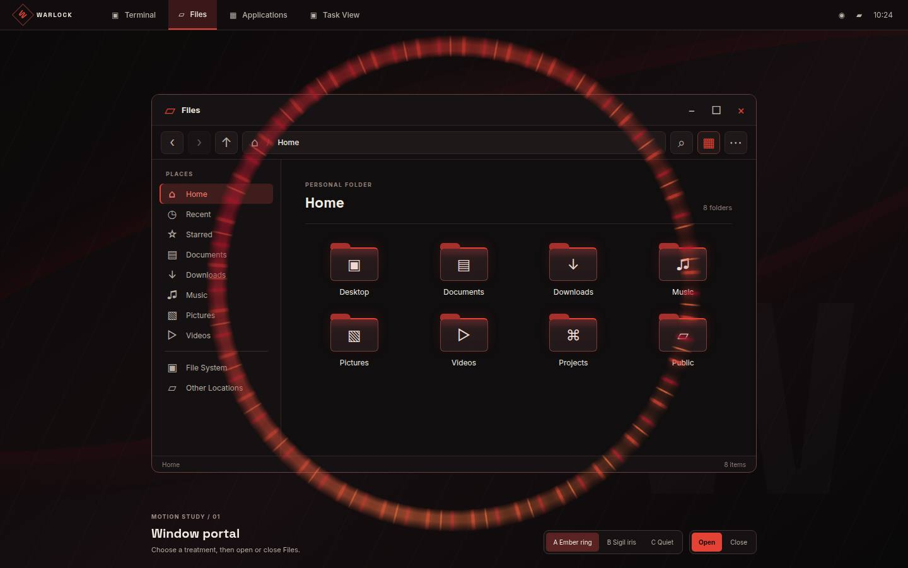
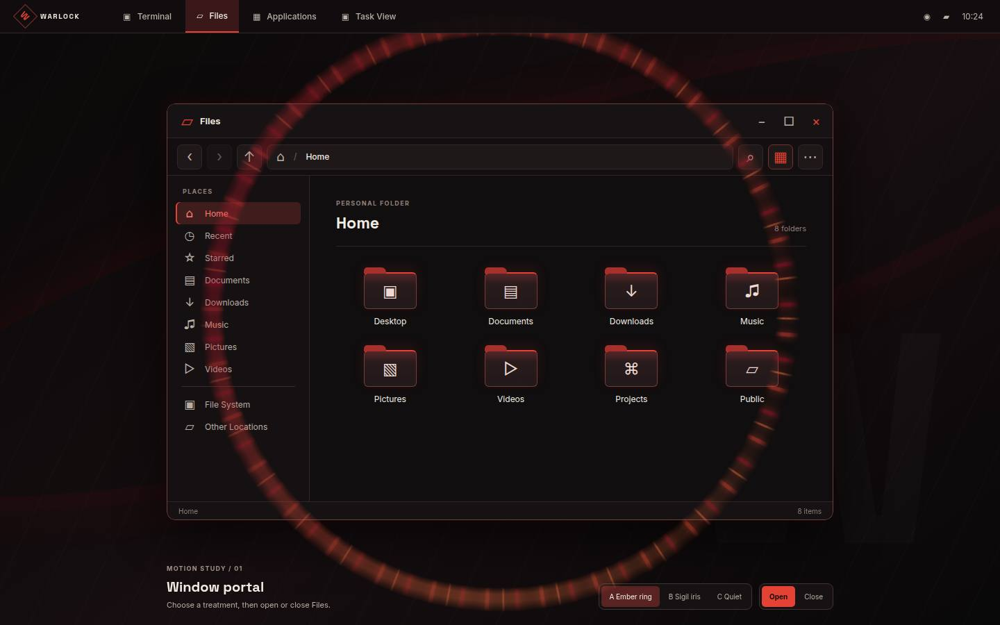
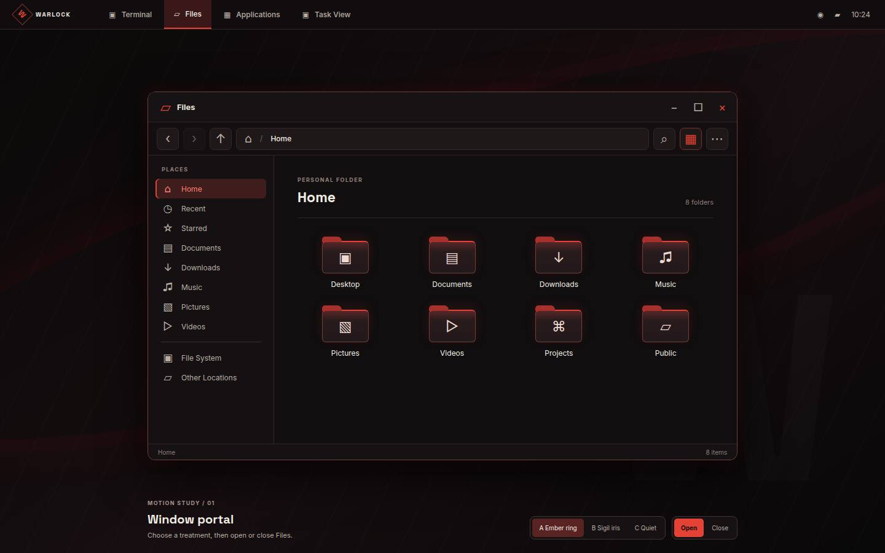
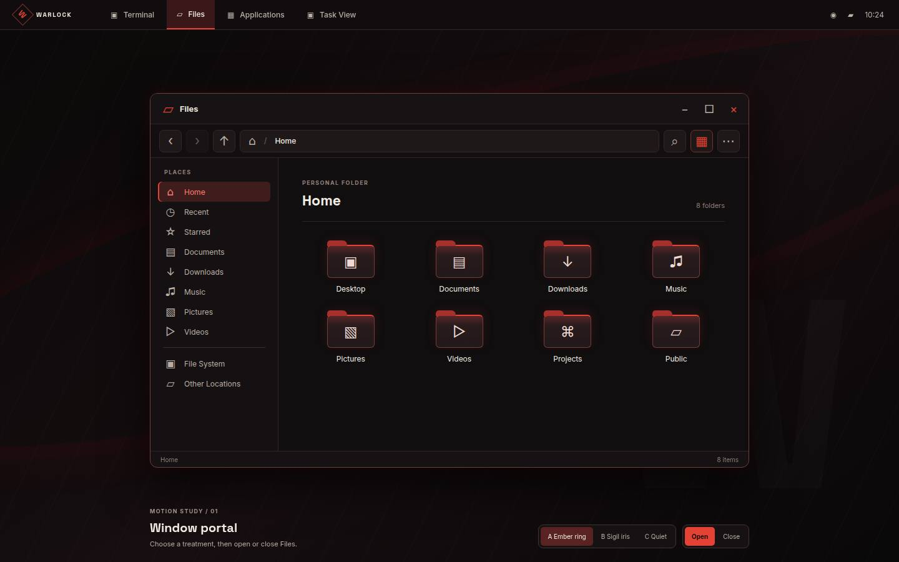
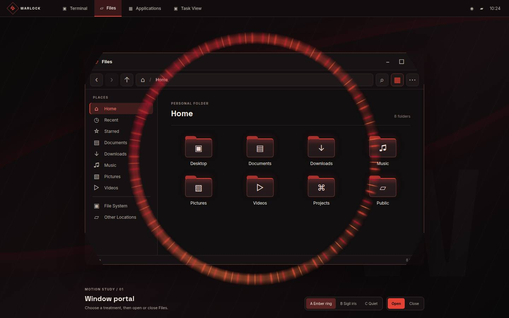
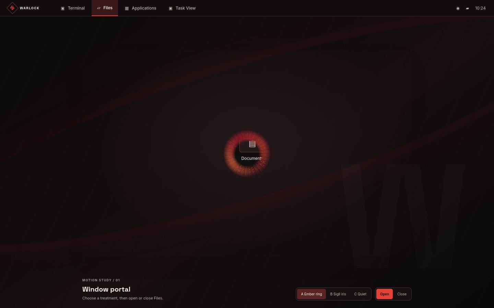
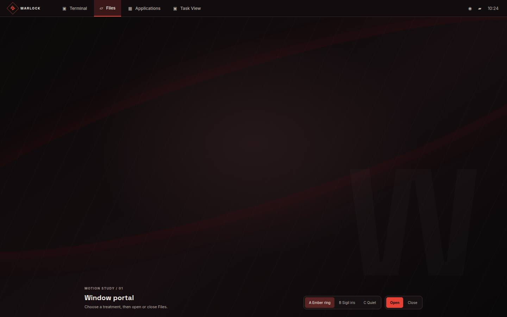
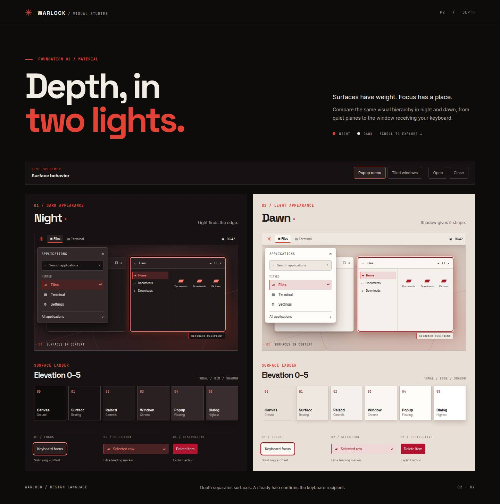

Effects
A brief ember portal marks observed application-window creation and removal.
Play the portal
Choose a presentation tier and explicitly play an opening or closing. The example is decorative; its window and button remain in place.
Live content stays at its final geometry.
Ready. No effect plays until activated.
Full, reduced and off
Full uses 520ms opening and 360ms closing. Reduced uses only decorative frame opacity for 120ms opening and 90ms closing, without sparks or movement. Off settles immediately. Reduced motion also settles immediately.
Timeline
Opening: ignite 0–120ms, expand 120–380ms, resolve 380–460ms, settle 460–520ms. Closing: release 0–90ms, contract 90–270ms, extinguish 270–360ms.
Prototype study frames
The following unmodified frames document an earlier visual study. They are not evidence of final native integration.











Resource limits
At most one portal runs at a time and at most one full portal starts per rolling second. Additional windows settle without a queue. Decorative coverage stays below 5% of the viewport, with bounded bloom and no repeated flashes. Hidden documents and interruptions settle immediately.
Access and native presentation
The live input plane and sharp focus cues stay at final geometry; decoration is pointer-inert and hidden from accessibility APIs. Native client content requires a guarded compositor or host presentation path: ordinary CSS cannot safely animate an arbitrary native client frame. Enter the desktop.